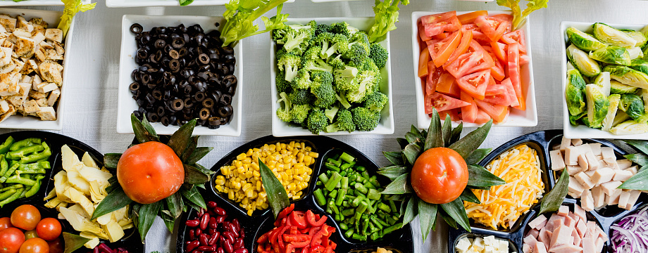
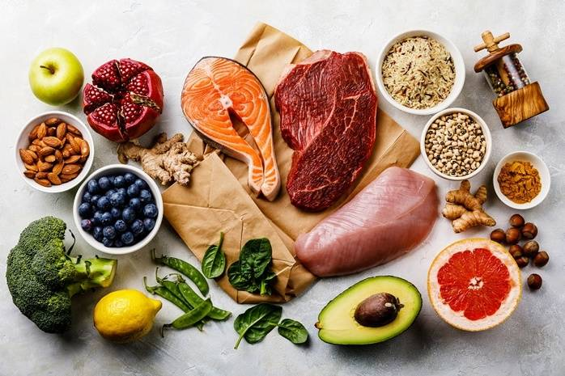

Питание – это жизненно необходимый процесс для нашего организма. В результате этого процесса человек получает энергию, строительный материал для обновления (роста) организма, биологические активные питательные вещества, определенное воздействие на психику. Правильное питание способно подарить человеку здоровье, долголетие и красоту.
Правильное питание предполагает, что в организм регулярно, в необходимом количестве и оптимальных соотношениях должны поступать многие питательные вещества – белки, углеводы, жиры, вода, минеральные вещества и витамины.
Недостаток, как и избыток питательных элементов, становятся причиной сначала временных неудобств, затем источником развития заболеваний, фактором преждевременного старения и ранней смерти. Так, дефицит витаминов влияет на здоровье, ум и молодость значительное больше, чем ряд других причин.
Здоровое питание (здоровая диета) — это питание, обеспечивающее рост, нормальное развитие и жизнедеятельность человека, способствующее укреплению его здоровья и профилактике заболеваний. Соблюдение правил здорового питания в сочетании с регулярными физическими упражнениями сокращает риск хронических заболеваний и расстройств, таких как ожирение, сердечно - сосудистые заболевания, диабет, повышенное давление и рак.
Также здоровое питание даст возможность стабилизировать вес без насильственных ограничений, поможет избавиться от заболеваний и предотвратить их развитие, будет содействовать восстановлению интеллектуальной и физической энергии. То есть, правильное питание – это один из главных путей, который приведет людей к здоровью. А здоровье, в свою очередь, даст, прежде всего, хорошее самочувствие, а также прекрасный внешний вид и время для того, чтобы мы могли достичь тех целей, которые ставим перед собой в жизни.

Полуфабрикаты, товары в упаковке со множеством консервантов, красителей, усилителей вкуса не вписываются в систему здорового питания. Ведь такая пища колоссально увеличивает нагрузку на организм, способствует зашлаковыванию кишечника, замедляет обмен веществ и мешает выводить токсины. Так что любой запеченный в духовке кусок мяса полезней магазинной колбасы, даже самого хорошего производства.
Очищенные продукты лишены такого важного компонента, как клетчатка, которая необходима для работы пищеварительных органов, питания лакто- и бифидумбактерий, населяющих стенки кишечника.
На практике это означает, что вместо белого батона правильней есть цельнозерновой хлеб, а вместо белого риса — бурый. Обычный рафинированный сахар можно заменить медом, сиропом агавы, топинамбура или другими натуральными сахарами.
Старайтесь каждый день съедать не меньше 300 г свежих овощей и 300 г свежих фруктов. С этими продуктами вы получаете растворимую и нерастворимую клетчатку и необходимые витамины.
Проще всего брать с собой на работу порезанное на дольки яблоко или грушу, морковные или сельдереевые палочки. Так вы даже не заметите, как съедите необходимое количество овощей и фруктов, попутно утолив чувство голода.
Во-первых, она дает долгое ощущение сытости. Во-вторых, богата незаменимыми аминокислотами. К таким продуктам относятся разные виды мяса, кролик, цесарка, перепелка, рыба и морепродукты, треска, окунь, креветки, кальмары, морские гребешки и т.д.
Это лучший источник незаменимых жирных кислот (например, линолевой). Хорошо, если у вас на кухне будет стоять 4-5 бутылочек с разнообразными маслами — льняным, виноградных косточек, кунжутным, оливковым, грецкого ореха.
Слишком редкие приемы пищи так же вредны, как и постоянные перекусы. Старайтесь делать 3-4 приема пищи в день, так как промежуток более 5 часов замедляет метаболизм и настраивает организм на экономный расход энергии. Следствие — накопление жировых отложений.
Постоянно жевать тоже не стоит. Не перекусывайте на рабочем месте, за просмотром телевизора или чтением социальных сетей. Так вы не контролируете процесс потребления пищи, не чувствуете насыщения и не можете вовремя остановиться. В итоге съедаете больше, чем нужно.
Сахар из сладостей и хлебобулочных изделий быстро всасывается в кровь и моментально поднимает уровень глюкозы. Вслед за этим следует столь же стремительное ее снижение, и вы снова испытываете чувство голода. К тому же такие резкие колебания сахара негативно отражаются на работе организма.
Обычную поваренную соль лучше заменить на морскую или гималайскую. В поваренной соли только два микроэлемента — натрий и хлор, тогда как в морской их насчитывается до 90. И конечно, нужно стараться постепенно снижать потребление соли. Совсем отказываться не нужно. Однако избыток соли вызывает задержку жидкости в организме, приводит к отекам и повышенному давлению.
Нужно выпивать не меньше 30-35 мл жидкости на один килограмм вашего веса. Помните, что кофе и соки не заменяют воду. Кстати, от соков и сладких газированных напитков лучше вообще отказаться — они содержат слишком много сахара.
Минимальная тепловая обработка — залог сохранения целостной структуры продуктов. Например, крупу или макароны можно варить всего несколько минут. Они получаются немного жестковатыми (al dente) и сохраняют полезный крахмал. Для мясных и рыбных продуктов наиболее подходящими способами считаются варка, приготовление на пару, запекание в духовке и (для разнообразия!) гриль.
И не забывайте, что иногда позволять себе бутерброд с колбасой или пирожное — не преступление. Главное, чтобы такое меню не стало ежедневным рационом.
